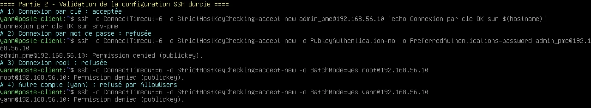
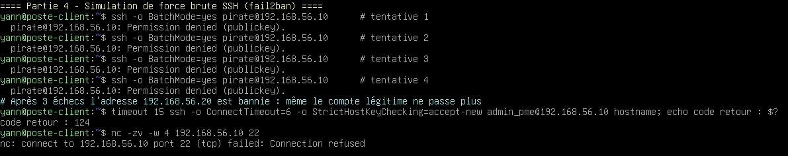

PROJET 09 — Cybersécurité
Durcissement d'un serveur Linux
Sécuriser un serveur Debian avant sa mise en production
Une PME installe un serveur Debian 13 pour ses services internes. Avant la mise en production, j'ai réduit sa surface d'attaque : compte d'administration dédié, politique de mots de passe, SSH par clé uniquement, pare-feu, fail2ban et mises à jour automatiques. Chaque mesure a été vérifiée depuis un second poste, puis le résultat mesuré avec un audit Lynis.
- Maquette VirtualBox : serveur Debian 13 et poste client sur un réseau isolé, instantané avant durcissement
- Partitions /home, /var et /tmp séparées, compte root verrouillé
- Compte d'administration sudo dédié, politique de mots de passe (pam_pwquality)
- Verrouillage du compte après 5 échecs (pam_faillock)
- SSH par clé ED25519 uniquement : root et mots de passe refusés, AllowUsers
- Pare-feu ufw en refus par défaut, seul SSH autorisé
- fail2ban : bannissement après 3 échecs, testé par une attaque simulée
- Mises à jour de sécurité automatiques, services inutiles désactivés
- Audit Lynis (indice 70/100), tests rejoués après redémarrage




Rendre compte d'un travail en équipe
Non mobilisée dans ce projetGérer le patrimoine informatique
- Recenser et identifier les ressources numériques
- ✓Exploiter des référentiels, normes et standards
- ✓Mettre en place et vérifier les niveaux d'habilitation associés à un service
- ✓Vérifier les conditions de la continuité d'un service informatique
- Gérer des sauvegardes
- ✓Vérifier le respect des règles d'utilisation des ressources numériques
Répondre aux incidents et aux demandes d'assistance et d'évolution
- ✓Traiter des demandes concernant les services réseau et système, applicatifs
Développer la présence en ligne de l'organisation
Non mobilisée dans ce projetTravailler en mode projet
- ✓Analyser les objectifs et les modalités d'organisation d'un projet
- Planifier les activités
- ✓Évaluer les indicateurs de suivi d'un projet et analyser les écarts
Mettre à disposition des utilisateurs un service informatique
- ✓Réaliser les tests d'intégration et d'acceptation d'un service
- ✓Déployer un service
- ✓Accompagner les utilisateurs dans la mise en place d'un service
Organiser son développement professionnel
- ✓Mettre en place son environnement d'apprentissage personnel